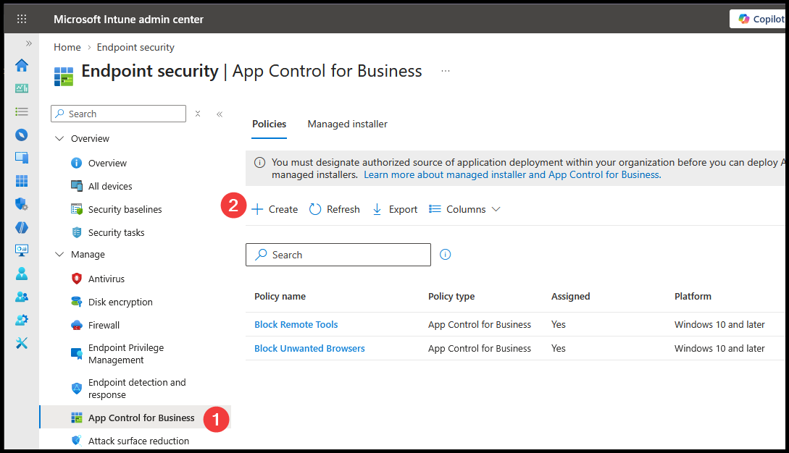
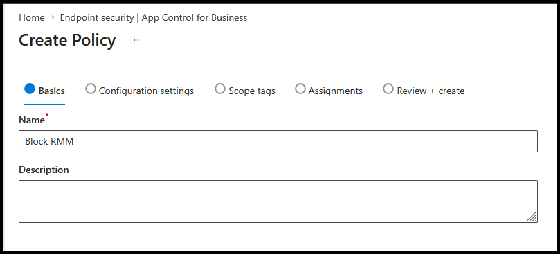
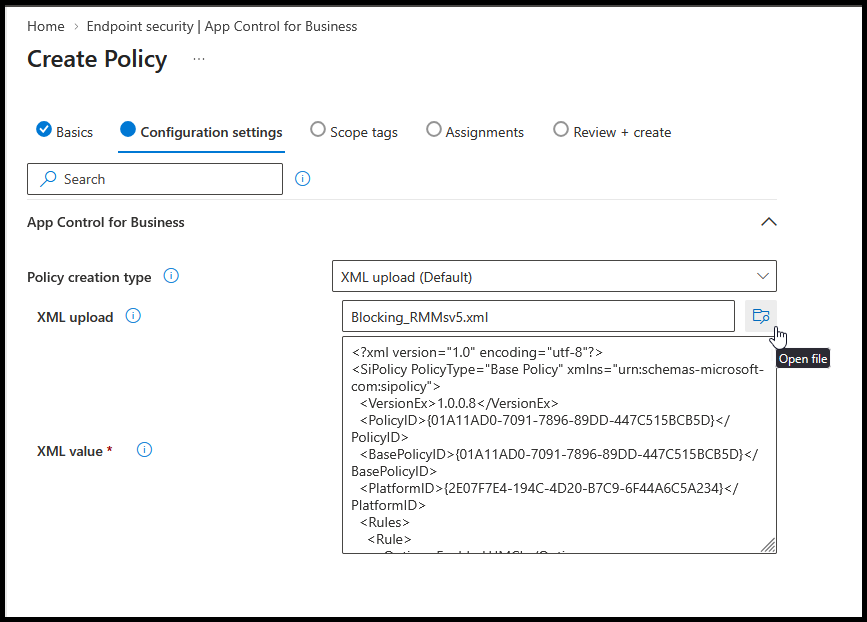
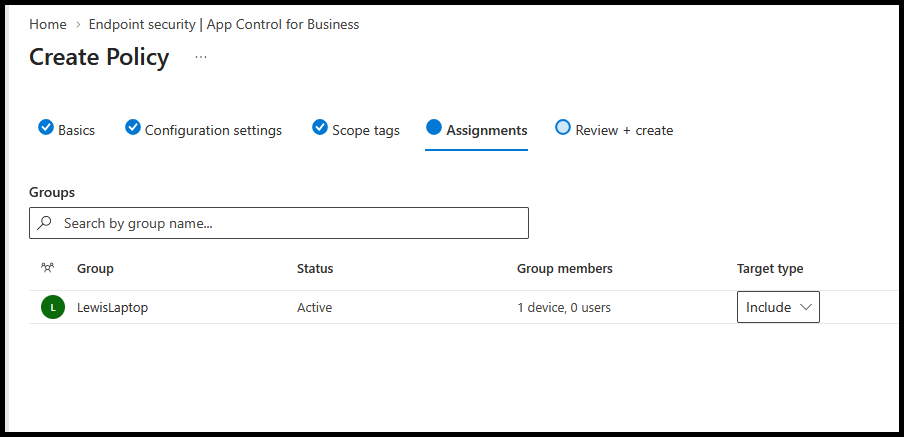

Deploy WDAC
Creates an XML policy that blocks the remote tools you have not excluded.
Designed for Windows 11 24H2 and newer. Many rules use several wildcards, which need Windows 11.
Exclude trusted tools, then download XML.
1. Create
Intune → Endpoint security → App Control for Business → Create.

2. Name
Name the policy. Select Next.

3. Upload
Choose XML upload (Default). Upload your downloaded XML.

4. Assign
Set scope tags if needed. Assign your pilot device group.
Review + create → Create.

5. Verify
- Allow the policy to sync to the pilot device.
- Test excluded and blocked tools.
Expand assignments after testing.